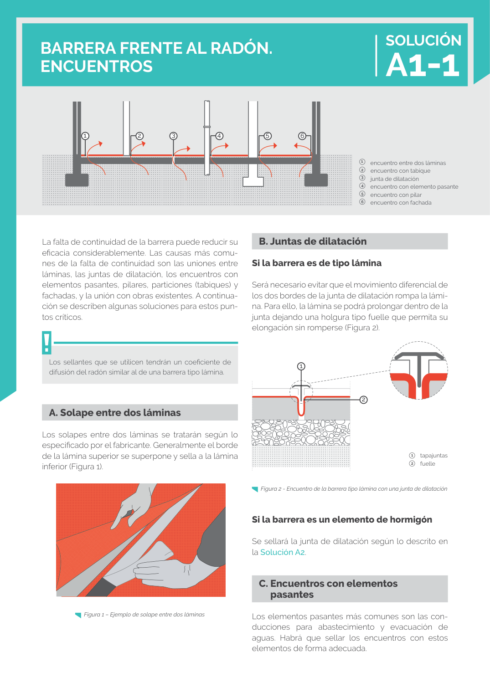

<!doctype html>
<html lang="es"><head><meta charset="utf-8">
<meta name="viewport" content="width=device-width, initial-scale=1">
<title>GUIA · C. Encuentros con elementos pasantes</title><link rel="stylesheet" href="../estilo.css">
</head><body>
<nav><a href="../index.html">Índice</a> › <a href="../doc/guia-pdf-f3314b0414fe-sin-fecha-e58e54b822cf.html">GUIA</a> › a0087</nav>

<header class="meta">
<p><a href="../doc/guia-pdf-f3314b0414fe-sin-fecha-e58e54b822cf.html">GUIA</a> · C. Encuentros con elementos pasantes · versión sin-fecha · capa guia</p>
</header>
<div class="cita"><strong>Cita:</strong> GUIA · ID técnico a0087 · C. Encuentros con elementos pasantes · páginas físicas pág. 31 (impresas: ['31'])</div>
<p>Formatos: <a href="../../contenido/docs/GUIA-PDF-f3314b0414fe/sin-fecha__e58e54b822cf/apartado/a0087__c-encuentros-con-elementos-pasantes.json">JSON compacto</a> · <a href="../../contenido/docs/GUIA-PDF-f3314b0414fe/sin-fecha__e58e54b822cf/apartado/a0087__c-encuentros-con-elementos-pasantes.md">Markdown</a> · <a href="../../contenido/docs/GUIA-PDF-f3314b0414fe/sin-fecha__e58e54b822cf/fuente.pdf">PDF fuente</a></p>
<p><a href="../doc/guia-pdf-f3314b0414fe-sin-fecha-e58e54b822cf.html">Ámbito del documento</a> · <a href="../doc/guia-pdf-f3314b0414fe-sin-fecha-e58e54b822cf.html#ambito">texto del ámbito</a> ·
<a href="../doc/guia-pdf-f3314b0414fe-sin-fecha-e58e54b822cf.html">documento y tablas</a></p>
<nav><a href="guia-pdf-f3314b0414fe-sin-fecha-e58e54b822cf__a0086.html">← Si la barrera es un elemento de hormigón</a> <a href="guia-pdf-f3314b0414fe-sin-fecha-e58e54b822cf__a0088.html">A. Solape entre dos láminas →</a></nav>
<h1>C. Encuentros con elementos pasantes</h1>
<p>Tipo: tablas, figuras · nivel 3 · sección estimada: 1   	tapajuntas 2 	 fuelle · padre: a0085</p>
<pre class="literal">C. Encuentros con elementos pasantes
pasantes
Los elementos pasantes más comunes son las con­
ducciones para abastecimiento y evacuación de
aguas. Habrá que sellar los encuentros con estos
elementos de forma adecuada.
La falta de continuidad de la barrera puede reducir su
eficacia considerablemente. Las causas más comu­
nes de la falta de continuidad son las uniones entre
láminas, las juntas de dilatación, los encuentros con
elementos pasantes, pilares, particiones (tabiques) y
fachadas, y la unión con obras existentes. A continua­
ción se describen algunas soluciones para estos pun­
tos críticos.
Los sellantes que se utilicen tendrán un coeficiente de
difusión del radón similar al de una barrera tipo lámina.</pre>
<h2>Tablas en estas páginas</h2><ul><li>p. 31 · <a href="../../contenido/docs/GUIA-PDF-f3314b0414fe/sin-fecha__e58e54b822cf/tabla/p0031_t01.json">p0031_t01.json</a> · <a href="../../contenido/docs/GUIA-PDF-f3314b0414fe/sin-fecha__e58e54b822cf/tabla/p0031_t01.csv">.csv</a></li></ul><h2>Página visual</h2><figure><a href="../../contenido/docs/GUIA-PDF-f3314b0414fe/sin-fecha__e58e54b822cf/figura/p0031.png"></a><figcaption>Página visual 31 (fuente para fórmulas/tablas/figuras)</figcaption></figure><p class="aviso">PDF fuente redistribuible: copia fiel enlazada en esta página (SHA256 verificado).</p>
<footer>Generado estáticamente desde JSON normalizado; sin JavaScript ni servicios externos.
El JSON es la fuente; este HTML es caché reproducible.</footer>
</body></html>
